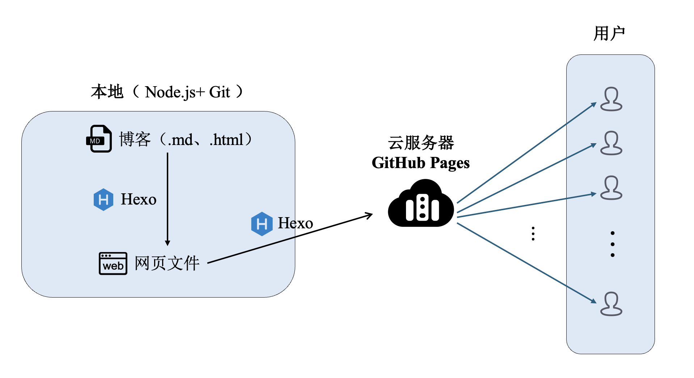
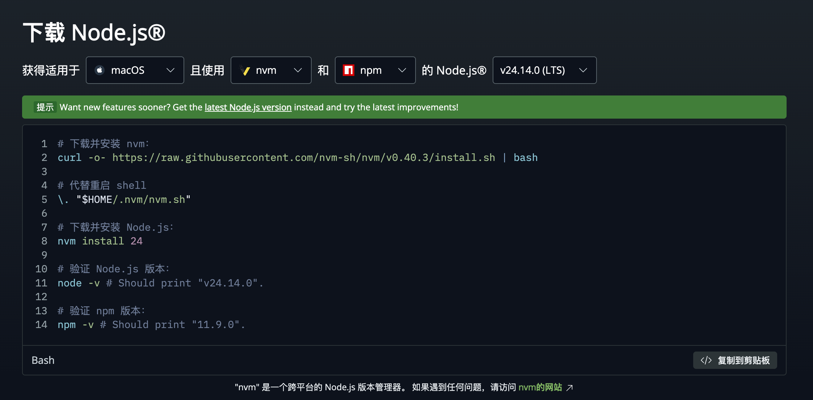
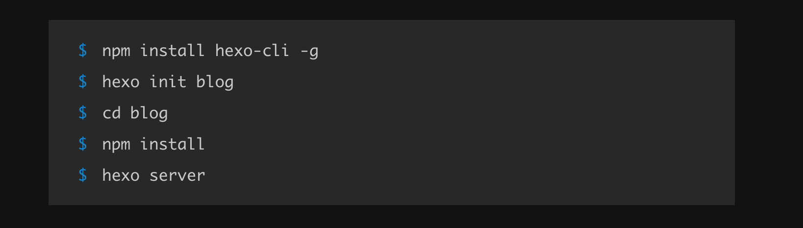
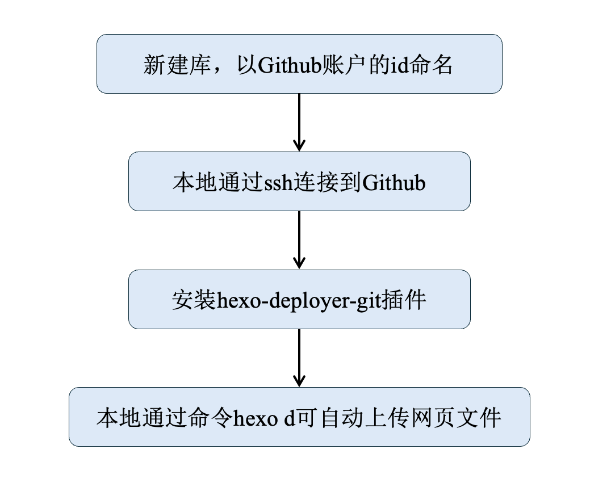
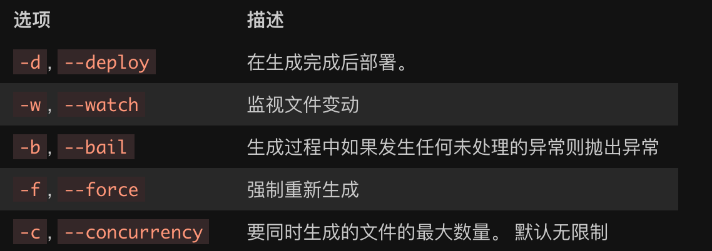

通过Hexo和Github pages实现个人静态网站的搭建与部署。
1 通过Hexo和Github pages搭建与部署网站的原理

- 当在本地用写好个人博客后——一般是md文档，然后让Hexo将该文档转化为网站可以显示的网页文件
- 此时网页文件仍然只存在于本地，需要Hexo将网页文件上传到Github
- Github收到文件后，会自动将其展示在Github Pages，此时全世界的用户就都可以访问该文章了
以下示例基于Mac，不同系统之间略有区别，大体相似。
2 配置环境
2.1 Node.js和Git
首先要在本地配置环境，需要安装Node.js和Git。
那么为什么需要安装Node.js和Git呢？
因为Hexo的运行需要用到它们。
网站分为静态网站和动态网站，静态网站以其简单的特性能恰当匹配小型个人博客网站的需求。Hexo是目前市场上主流的静态网站框架，有着成熟的网站主题社区以及相对简单的操作。
Hexo是由JavaScript编写的，其在本地运行需要能够运行JavaScript的环境，即Node.js。二者之间的关系同C程序和C语言编译器的关系一样。
至于Git，是因为需要将本地web文件上传到Github，如果是托管到Github以外的服务器上就不需要了。
2.2 安装过程
进入Node.js官网的命令行下载界面，可以看到首先需要下载nvm，并验证npm是否安装成功。

在执行命令之前先了解一下nvm和npm。
nvm全称为Node Version Manager，是用来便于管理Node.js版本的工具，可以方便切换不同版本。若无此需求，可不安装。笔者无此需求，但也装了。
npm全称为Node Package Manager，为Node.js默认的包管理器。
当执行第一条程序时可能会出现如下报错。
1 | bass@BassdeMacBook-Air ~ % curl -o- https://gitee.com/mirrors/nvm/raw/v0.40.3/install.sh | bash |
因为虽然nvm本身是bash程序，但是其功能是对Node.js进行版本管理，其中包括下载。
而Node.js底层由C/C++编写，所以需要相应的运行环境，具体而言是下载XCode或其轻量版Command Line Tools，其中包含clang、make等。下载命令为xcode-select --install。
而后一路向下安装即可。
因为Command Line Tools中已经包含git，所以git无需额外安装了。通过git --version可以判断git是否安装成功。
3 Hexo的安装与个性化设置
3.1 Hexo的安装
新建文件夹，存储Hexo相关文件。在该文件夹下打开终端。
进入Hexo官网可见到如下安装命令。

第一行目的是安装hexo命令行工具（非本体），-g为全局安装，即任意位置都可使用该命令。
第二行是新建blog文件夹，在该文件夹下进行安装hexo本体。先安装命令行工具再安装本体目的是为了避免全局的版本冲突，因为不同的项目可能需要不同的hexo版本。
第四行install后面没有参数，默认读取文件夹中的package.json文件，安装其中的包。
第五行是启动一个本地 HTTP 服务器（默认端口 4000），并实时渲染博客内容。
对于项目文件结构、Hexo命令，Hexo官网有详细的文档：https://hexo.io/zh-cn/docs/setup
3.2 Hexo的个性化
3.2.1 设置主题
Hexo有着丰富的主题社区 https://hexo.io/themes/。将主题项目放在hexo项目的themes文件夹之下即可。
以Chic主题为例，导入Chic主题的操作如下：
1 | cd your-blog/themes |
其就是在themes文件夹下新建Chic，导入主题项目。
在hexo配置文件_config.yml的Extensions部分中找到theme:，设置参数为对应主题的文件夹名。
3.2.2 修改配置
通过全局配置文件（_config.yml）、主题配置文件（主题项目下的 _config.yml）、 hexo new page about，可以对网站的图标、名称、子页面、元数据等进行基本的修改。
全局配置：https://hexo.io/zh-cn/docs/configuration
Chic配置：https://github.com/Siricee/hexo-theme-Chic/blob/master/README-CN.md
4 网站部署

Github pages是Github为满足静态网站托管开发的一项功能，只需要注册了Github账号即可免费使用，操作简单。
第一步：
在Github中新建一个库，命名为username.github.io——这很重要！一定要用Github的ID来命名，否则识别不了该库作为Github Pages的页面。
创建后该库自动被渲染为网页，网址为 “www.username.github.io”。这就是Github Pages。
第二步：
通过ssh连接到github，通过ssh -T git@github.com判断是否能够连接。该操作在此不展开介绍。
第三步：
安装hexo-deployer-git插件，命令为npm install hexo-deployer-git --save。
第四步：
此时通过hexo d命令即可自动将hexo已经解析好的网页文件上传到Github。Github Pages将会对其进行渲染并展示在 www.username.github.io 网址上。
自定义域名：
执行完以上操作后，即可通过 www.username.github.io 访问部署的网站了。如果需要自定义域名，可通过阿里云等云服务提供商购买域名，解析到该网址，同时在Github对应的Repository—setting—Pages中填写自定义的域名，并勾选”Enforce HTTPS”。
5 Bug修复
bug_1：图片在网页中不显示
问题描述
打开_post文件夹中的博客图片可以正常显示，但生成网页文件后无法显示。
解决方法
hexo框架处理有问题。解决方式有多种，这里介绍其中一种。
更改配置文件，找到post_asset_folder，将属性值更改为true，同时增添两个属性，完整的修改如下：
1 | post_asset_folder: true |
打开配置文件会发现下面的属性是没有的，添加后需要先下载 hexo-renderer-marked 插件才能发挥作用。终端进入到hexo文件夹目录，通过以下命令安装插件。
1 | # 检查是否已安装 |
post_asset_folder: true是用来在新建博客的时候同时生成一个同名的资源文件夹，可用来存储图片。但是如果只是这样导入图片的语法会比较奇怪。
marked.prependRoot: true让hexo自动给图片加上网站根路径
marked.postAsset: true可以用markdown自带的语法导入图片
当这些设置好了之后，导入方式就是<img src="image-20260306172107181.png" alt="image-20260306172107181" style="zoom:40%;" />或者。路径就直接是文件名。
因此带来的问题是如果直接打开源文件图片是显示不出来的，在网页可以显示。问题是可以解决的，但并非所有的问题都是问题。
Hexo常用命令
| 操作 | 命令 |
|---|---|
| 新建文章 | hexo new [layout] <title> |
| 本地生成静态文件 | hexo generate |
| 启动本地服务器 | hexo server |
| 部署网站 | hexo deploy-g, --generate（在部署前生成） |
清除缓存文件 (db.json) 和已生成的静态文件 (public)。常用于更换主题、修改配置后使用 |
hexo clean |
| 新建页面 | hexo new page about |
日常使用（按顺序）：
hexo new <title>hexo clean&hexo ghexo shexo d
在
hexo g之前执行hexo s会自动执行hexo g生成最新网页文件，但最好还是按顺序执行。